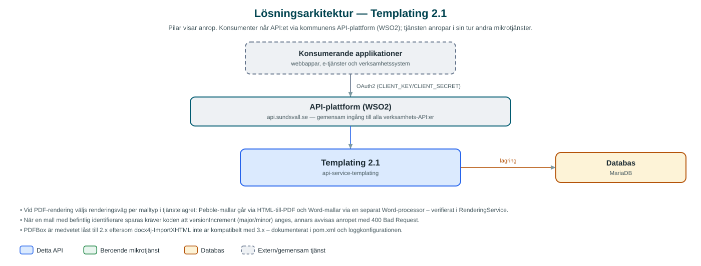

Templating
Mallbaserad dokumentgenerering – lagrar versionshanterade mallar och renderar dem till HTML eller PDF åt kommunens applikationer.
Om API:et
Templating är kommunens gemensamma tjänst för att skapa dokument ur mallar. I stället för att varje applikation själv bygger brev, beslut och andra dokument lagrar verksamheten mallarna centralt i denna tjänst och skickar bara in parametervärden vid rendering. Resultatet returneras base64-kodat som HTML eller färdig PDF.
Två malltyper stöds: Pebble-mallar (HTML med mallspråket Pebble) och Word-mallar (docx). Vid PDF-rendering väljer tjänsten automatiskt rätt renderingsväg utifrån mallens typ – HTML konverteras med iText html2pdf och Word-dokument via docx4j/Apache POI. Det går även att rendera direkt utan lagrad mall genom att skicka med mallinnehållet i anropet.
Mallar identifieras med en identifierare och ett versionsnummer och kan sökas fram via metadata. Vid uppdatering av en befintlig mall måste anroparen ange om ändringen är en major- eller minor-version, och äldre versioner finns kvar och kan fortfarande användas för rendering.
Det här gör API:et
- Mallagring med versionshantering – Mallar lagras per kommun med identifierare och version; nya versioner skapas som major- eller minor-steg och äldre versioner finns kvar.
- Rendering till HTML – En lagrad mall renderas med inskickade parametrar och returneras base64-kodad.
- Rendering till PDF – Samma mall kan renderas till PDF – HTML-mallar via iText html2pdf och Word-mallar via docx4j/Apache POI.
- Direktrendering – Mallinnehåll kan skickas med i anropet och renderas direkt utan att mallen först lagras; malltypen identifieras automatiskt ur innehållet.
- Metadatasökning – Mallar söks fram via metadatafilter, med möjlighet att bara visa senaste versionen av varje mall.
- Uppdatering med JSON Patch – Befintliga mallversioner ändras med JSON Patch-anrop (application/json-patch+json).
API-dokumentation
API:ets samtliga resurser, parametrar och datamodeller finns beskrivna i en OpenAPI-specifikation som är hämtad ur källkodsförrådet. Den kan utforskas interaktivt i Swagger UI eller laddas ner som YAML.
Teknisk dokumentation
Nedan beskrivs hur tjänsten är uppbyggd, vilka andra tjänster den anropar och vad som krävs för att driftsätta den. Informationen är härledd ur källkoden och dess konfiguration på GitHub.
Arkitektur

API:et är en mikrotjänst (Java 25, Spring Boot via kommunens gemensamma tjänsteplattform dept44 (8.0.8), byggd med Maven). Konsumenter når tjänsten via kommunens gemensamma API-plattform (WSO2) på api.sundsvall.se – tjänsten anropas aldrig direkt. Lagring: MariaDB med Flyway-migrationer; mallar med innehåll, metadata och versioner lagras i databasen.
Teknikstack
- Språk: Java 25
- Ramverk: Spring Boot via kommunens gemensamma tjänsteplattform dept44 (8.0.8), byggd med Maven
- Databas: MariaDB med Flyway-migrationer; mallar med innehåll, metadata och versioner lagras i databasen
- Övrigt: Pebble 4.1.2 som mallmotor, iText html2pdf för HTML-till-PDF, docx4j och Apache POI för Word-mallar, json-patch för uppdateringar
Beroenden till andra mikrotjänster
Inga anrop till andra mikrotjänster hittades i källkodens konfiguration.
Konfiguration och driftsättning
- MariaDB-anslutning; databasschemat versionshanteras med Flyway (aktiverat som standard)
- rendering.direct-output-as-base64 styr att renderingsresultat returneras base64-kodat
- Ingen integration mot andra mikrotjänster – tjänsten är självförsörjande utöver databasen
- Anrop görs per kommun – municipalityId ingår i API-vägarna
Noterbart ur källkoden
- Vid PDF-rendering väljs renderingsväg per malltyp i tjänstelagret: Pebble-mallar går via HTML-till-PDF och Word-mallar via en separat Word-processor – verifierat i RenderingService.
- När en mall med befintlig identifierare sparas kräver koden att versionIncrement (major/minor) anges, annars avvisas anropet med 400 Bad Request.
- PDFBox är medvetet låst till 2.x eftersom docx4j-ImportXHTML inte är kompatibelt med 3.x – dokumenterat i pom.xml och loggkonfigurationen.
- Tjänsten anropar inga andra kommun-API:er; integrationslagret består enbart av databasåtkomst.
Källkod
Källkoden är öppen och finns hos Sundsvalls kommun på GitHub. I källkodsförrådet finns även instruktioner för att klona, konfigurera och starta tjänsten i egen miljö.